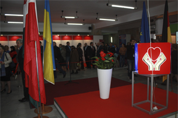

ЛЬВІВСЬКИЙ МЕДИЧНИЙ ФОРУМ - найбільша медична подія Західної України, куди з'їжджаються науковці, спеціалісти з різних галузях медицини, представники відомих фірм-виробників світу та безпосередньо виробники виробів медичного призначення, обладнання та фармацевтичних препаратів всієї України.
За роки свого існування саме цей захід став ідеальним місцем для просування новинок, методик лікування та передових технологій, обміну досвідом між спеціалістами різних регіонів України та зарубіжжя.
У рамках Форуму буде проведено ряд науково-практичних конференцій, лекторіїв, майстер-класів та практичних демонстрацій за участю провідних спеціалістів та відомих фірм-виробників галузі.
Форум проходить за підтримки МОЗ України та Департаменту охорони здоров'я Львівської обласної державної адміністрації.
Львівський медичний форум внесений в "Реєстр медичних виставок та реєстр з’їздів, конгресів, симпозіумів, науково-практичних конференцій, які проводитимуться у 2019 році".
Тематичні розділи виставки "Гал-МЕД"
• Лікувальне, діагностичне та реабілітаційне обладнання;
• Медичні прилади та інструменти;
• Лабораторна медицина;
• Засоби реабілітації та товари для людей з обмеженими можливостями;
• Засоби надання невідкладної допомоги;
• Офтальмологічні послуги та обладнання;
• Оптика та окуляри;
• Фармацевтичні препарати;
• Сучасна клініка та послуги;
• Медичний одяг, засоби санітарії та дезінфекції;
• Страхова медицина;
• Біологічно активні добавки, фіто-продукти та лікувальна косметика
В рамках виставки:
• V спеціалізована експозиція «Медичний туризм»
• V спеціалізована експозиція «Реабілітація»
Сховати
учасникам
Виставка та Форум проводяться щорічно
Чудова можливість для нових знайомств

Медичні тренди та новітні технології
Безпосередня комунікація з відвідувачем


Відвідувачам
Будемо раді бачити Вас на Львівському медичному форумі!
Урочисте відкриття виставки:
09 квітня о 10.00
До виставки залишилось:
Режим роботи виставки:
09.04 - 10:00 – 18:00
10.04 - 10:00 – 18:00
11.04 - 10:00 – 17:00
Місце проведення:
м. Львів, вул. Коперника, 17
(Львівський Палац Мистецтв)
ЛЬВІВСЬКИЙ МЕДИЧНИЙ ФОРУМ - найбільша медична подія Західної України, куди з'їжджаються науковці, спеціалісти з різних галузях медицини, представники відомих фірм-виробників світу та безпосередньо виробники виробів медичного призначення, обладнання та фармацевтичних препаратів всієї України.
За роки свого існування саме цей захід став ідеальним місцем для просування новинок, методик лікування та передових технологій, обміну досвідом між спеціалістами різних регіонів України та зарубіжжя.
У рамках Форуму буде проведено ряд науково-практичних конференцій, лекторіїв, майстер-класів та практичних демонстрацій за участю провідних спеціалістів та відомих фірм-виробників галузі.
Форум проходить за підтримки МОЗ України та Департаменту охорони здоров'я Львівської обласної державної адміністрації.
Львівський медичний форум внесений в "Реєстр медичних виставок та реєстр з’їздів, конгресів, симпозіумів, науково-практичних конференцій, які проводитимуться у 2019 році".
ЛЬВІВСЬКИЙ МЕДИЧНИЙ ФОРУМ - найбільша медична подія Західної України, куди з'їжджаються науковці, спеціалісти з різних галузях медицини, представники відомих фірм-виробників світу та безпосередньо виробники виробів медичного призначення, обладнання та фармацевтичних препаратів всієї України.
За роки свого існування саме цей захід став ідеальним місцем для просування новинок, методик лікування та передових технологій, обміну досвідом між спеціалістами різних регіонів України та зарубіжжя.
У рамках Форуму буде проведено ряд науково-практичних конференцій, лекторіїв, майстер-класів та практичних демонстрацій за участю провідних спеціалістів та відомих фірм-виробників галузі.
Форум проходить за підтримки МОЗ України та Департаменту охорони здоров'я Львівської обласної державної адміністрації.
Львівський медичний форум внесений в "Реєстр медичних виставок та реєстр з’їздів, конгресів, симпозіумів, науково-практичних конференцій, які проводитимуться у 2019 році".
ЛЬВІВСЬКИЙ МЕДИЧНИЙ ФОРУМ - найбільша медична подія Західної України, куди з'їжджаються науковці, спеціалісти з різних галузях медицини, представники відомих фірм-виробників світу та безпосередньо виробники виробів медичного призначення, обладнання та фармацевтичних препаратів всієї України.
За роки свого існування саме цей захід став ідеальним місцем для просування новинок, методик лікування та передових технологій, обміну досвідом між спеціалістами різних регіонів України та зарубіжжя.
У рамках Форуму буде проведено ряд науково-практичних конференцій, лекторіїв, майстер-класів та практичних демонстрацій за участю провідних спеціалістів та відомих фірм-виробників галузі.
Форум проходить за підтримки МОЗ України та Департаменту охорони здоров'я Львівської обласної державної адміністрації.
Львівський медичний форум внесений в "Реєстр медичних виставок та реєстр з’їздів, конгресів, симпозіумів, науково-практичних конференцій, які проводитимуться у 2019 році".
ЛЬВІВСЬКИЙ МЕДИЧНИЙ ФОРУМ - найбільша медична подія Західної України, куди з'їжджаються науковці, спеціалісти з різних галузях медицини, представники відомих фірм-виробників світу та безпосередньо виробники виробів медичного призначення, обладнання та фармацевтичних препаратів всієї України.
За роки свого існування саме цей захід став ідеальним місцем для просування новинок, методик лікування та передових технологій, обміну досвідом між спеціалістами різних регіонів України та зарубіжжя.
У рамках Форуму буде проведено ряд науково-практичних конференцій, лекторіїв, майстер-класів та практичних демонстрацій за участю провідних спеціалістів та відомих фірм-виробників галузі.
Форум проходить за підтримки МОЗ України та Департаменту охорони здоров'я Львівської обласної державної адміністрації.
Львівський медичний форум внесений в "Реєстр медичних виставок та реєстр з’їздів, конгресів, симпозіумів, науково-практичних конференцій, які проводитимуться у 2019 році".
ЛЬВІВСЬКИЙ МЕДИЧНИЙ ФОРУМ - найбільша медична подія Західної України, куди з'їжджаються науковці, спеціалісти з різних галузях медицини, представники відомих фірм-виробників світу та безпосередньо виробники виробів медичного призначення, обладнання та фармацевтичних препаратів всієї України.
За роки свого існування саме цей захід став ідеальним місцем для просування новинок, методик лікування та передових технологій, обміну досвідом між спеціалістами різних регіонів України та зарубіжжя.
У рамках Форуму буде проведено ряд науково-практичних конференцій, лекторіїв, майстер-класів та практичних демонстрацій за участю провідних спеціалістів та відомих фірм-виробників галузі.
Форум проходить за підтримки МОЗ України та Департаменту охорони здоров'я Львівської обласної державної адміністрації.
Львівський медичний форум внесений в "Реєстр медичних виставок та реєстр з’їздів, конгресів, симпозіумів, науково-практичних конференцій, які проводитимуться у 2019 році".
ЛЬВІВСЬКИЙ МЕДИЧНИЙ ФОРУМ - найбільша медична подія Західної України, куди з'їжджаються науковці, спеціалісти з різних галузях медицини, представники відомих фірм-виробників світу та безпосередньо виробники виробів медичного призначення, обладнання та фармацевтичних препаратів всієї України.
За роки свого існування саме цей захід став ідеальним місцем для просування новинок, методик лікування та передових технологій, обміну досвідом між спеціалістами різних регіонів України та зарубіжжя.
У рамках Форуму буде проведено ряд науково-практичних конференцій, лекторіїв, майстер-класів та практичних демонстрацій за участю провідних спеціалістів та відомих фірм-виробників галузі.
Форум проходить за підтримки МОЗ України та Департаменту охорони здоров'я Львівської обласної державної адміністрації.
Львівський медичний форум внесений в "Реєстр медичних виставок та реєстр з’їздів, конгресів, симпозіумів, науково-практичних конференцій, які проводитимуться у 2019 році".